측량및지형공간정보기사 (2003-08-31 기출문제)
1과목: 측지학 및 위성측위시스템
1. 지구타원체상 한 점의 법선을 포함하며, 그 점을 지나는 자오면과 직교하는 평면과 타원체면과의 교선은 다음 중 어느 것인가?
- 항정선(Loxodrome)
- 측지선(Geodetic line)
- 묘유선(Prime vertical)
- 평행권(Parallel line)
(정답률: 94%)

2. 다음 중 물리학적 측지학에 속하지 않는 것은?
- 지구형상해석
- 중력측정
- 지자기측정
- 위성측지
(정답률: 84%)
3. 지구가 타원체인 증거가 아닌 것은?
- 고위도로 갈수록 만유인력이 크다.
- 고위도로 갈수록 곡률반경이 크다.
- 위도차 1° 의 거리는 고위도로 갈수록 크다.
- 중력은 적도상에서 가장 크다.
(정답률: 67%)
4. 다음 그림에서와 같이 지구상의 두점 A,B에서 측량을 실시하여 다음과 같은 결과를 얻었다고 할때 지구의 원둘레는 얼마인가? (단, 지구는 구로 생각한다. AB의 지표면 거리 920km, ∠ACD = 7°)
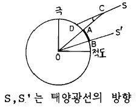
- 약 36,783km
- 약 47,314km
- 약 58,432km
- 약 67,516km
(정답률: 74%)
5. 다음 설명중 틀린 것은?
- 지구의 자전축을 지축이라 한다.
- 자오선은 적도와 직교하며 무수히 많다.
- 지구중심을 포함하는 임의의 평면과 지표면의 교선을 대원이라 한다.
- 평행권은 적도에 직교하는 평면과 지표면의 교선을 말한다.
(정답률: 17%)
6. 두 점간의 위치 차이를 나타내는 양으로 위치결정에 기본이 되는 요소가 아닌 것은?
- 구면 길이
- 곡면 길이
- 평면 길이
- 공간 길이
(정답률: 80%)
7. 황도와 적도가 만나는 점 가운데 태양이 적도를 남에서 북으로 자르며 갈 때 교차하는 점을 무엇이라 하는가?
- 추분점
- 천극점
- 지점(至点)
- 춘분점
(정답률: 85%)
8. 지구의 자전축이 흔들리는 현상을 무엇이라 하는가?
- 수차
- 중력
- 장동
- 조석
(정답률: 100%)
9. 구면삼각형에서 내각의 합이 180° 를 넘게 되는데 그 차를 무엇이라 하는가?
- 세차
- 균시차
- 구과량
- 연직선편차
(정답률: 28%)
10. UPS(Universal Polar Stereographic)좌표계에 대한 내용 중 옳지 않은 것은?
- UTM좌표로 표시하지 못하는 양극지역의 좌표를 표시 하는데 사용한다.
- 투영법은 극심입체투영법에 의한 것이다.
- 양극을 원점으로 하는 평면직각좌표계를 사용한다.
- 좌표의 종축은 경도 90° 및 270° 의 자오선이다.
(정답률: 90%)
11. 다음 중 가장 작은 값을 갖는 것은 어느 것인가? (단, ρ :위도, 0° ＜ ρ ＜ 90° )
- 자오선 곡률반경 M
- 묘유선 곡률반경 N
- 임의 방향에 대한 곡률반경 Rα
- 평균 곡률반경 R
(정답률: 100%)
12. 천문 측량에 대한 다음 사항중 틀린 것은?
- 천문측량이란 천체의 별을 관측하여 지구상의 제점의 위치를 결정하는 것이다.
- 태양을 중심으로 하여 무한하게 큰 반경을 가진 가상의 구체를 천구라 한다.
- 위도를 구하는 데는 천장의(Zenith telescope)를 사용한다.
- 관측자의 천정과 천극을 지나는 대원을 천구자오선이라 한다.
(정답률: 34%)
13. 다음 위성항법에 대한 설명중 옳지 못한 것은?
- 전파를 이용한 위성의 방향측정은 전파의 간섭에 의해 고도와 방향을 측정한다.
- 위성의 방향, 거리 및 거리변화를 측정하여 위치를 결정한다.
- 위성에 의한 정보전달 기능을 갖고 있다.
- 이용지역이 비교적 좁다.
(정답률: 93%)
14. 다음의 위성측지에 대한 설명 중 틀린 것은?
- 인공위성의 궤도면은 회전하고 있으며, 이를 조사하여 지구의 형상을 알 수 있다.
- 대략적인 위성의 궤도는 지구와 위성사이의 운동을 2체(두 물체) 문제로 해석 할 수 있다.
- 인공위성의 각 속도는 케플러의 식으로 구할 수 있다.
- 인공위성은 측지학에만 이용된다.
(정답률: 93%)
15. 다음 사항 중 적합하지 않는 것은?
- 지자기는 방향과 크기를 갖고 있는 벡터이다.
- 지하구조를 탄성파 측정에 의하여 탐사할 수 있다.
- EDM에 의해 정밀한 중력측정이 가능하다.
- 그리니치 천문대를 통과하는 자오면과 어느 지점을 통과하는 자오면과의 교각을 경도라 한다.
(정답률: 100%)
16. 지구 자기의 북반구에서는 자북으로 갈수록 자침의 남극쪽을 무겁게 하거나 길게 하는데 그 이유로 가장 알맞은 것은?
- 북으로 갈수록 편각이 커지므로
- 북으로 갈수록 복각이 커지므로
- 북으로 갈수록 복각이 작아지므로
- 북으로 갈수록 편각이 작아지므로
(정답률: 80%)
17. 다음중 전파에 의한 위치 결정방식이 아닌 것은?
- 원호방식
- 포물선방식
- 쌍곡선방식
- 방위선(radial line)방식
(정답률: 93%)
18. 지표면상의 구면 삼각형 ABC 의 세각을 관측한 결과 ∠A=51˚ 30´ , ∠B=65˚ 45´ , ∠C=64˚ 35´ 이었다. 구면 삼각형의 면적은? (단, 지구반경 R=6370km 이며, 측각오차는 없는 것으로 간주한다.)
- 1,596,427.4km2
- 1,298,366.4km2
- 142,342.4km2
- 18,633.4km2
(정답률: 100%)
19. 위성자체에 전파원이 있는 것이 아니라 반사프리즘이 위성에 탑재되어 펄스광의 왕복시간을 측정함으로써 거리를 측량하게 할 수 있는 관측법은?
- 전파 관측법
- 음파 관측법
- 레이저 관측법
- 카메라 관측법
(정답률: 100%)
20. 지표면상의 한 점에서 좌표원점 자오선에 평행인 선과 어떤 방향이 이루는 각을 무엇이라 하는가?
- 방위각
- 천정각
- 방향각
- 편각
(정답률: 86%)
2과목: 응용측량
21. 단곡선 설치시 교각이 49° 30', 반지름 150m, 중심선 간격이 20m일 때 20m에 대한 편각은 얼마인가?
- 5° 52'18"
- 4° 20'15"
- 3° 49'11"
- 1° 46'32"
(정답률: 93%)
22. 다음 그림과 같은 하천의 유량을 계산한 값중에서 알맞는 값은? (단, 각 구간의 평균유속은 다음표와 같다.)
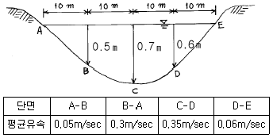
- 4.38m3/sec
- 4.83m3/sec
- 5.38m3/sec
- 5.83m3/sec
(정답률: 64%)
23. 시설물을 보는 각도중 수평시각에 관한 설명중 틀린 것은?
- 0° ＜ θH∙10° 사이에서 시설물은 주위 경관과 일체가 되고, 경관의 주제로서 대상에서 벗어난다.
- 10° ＜ θH∙30° 에서는 시설물의 전체 형상을 인식할 수 있고, 경관의 주제로서 적당하다.
- 30° ＜ θH∙60° 사이는 시설물이 시계중에 차지하는 비율이 작아 강조된 경관을 얻을 수 없다.
- θH가 60° 보다 크면 시설물에 대한 압박감을 느끼기 시작한다.
(정답률: 70%)
24. 그림과 같은 형태의 넓은 면적의 토량을 계산하는데 적당한 식은? (단, a, b는 구형단면의 세로와 가로의 거리 h1, h2, h3는 절취를 해야할 높이임)
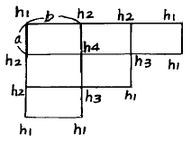
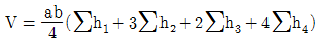
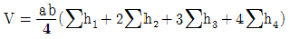
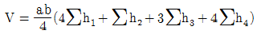
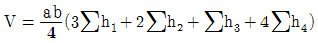
(정답률: 100%)
25. 하천, 항만 등에서 심천측량을 한 결과의 지형을 표시하는 방법중 알맞는 것은?
- 점고법
- 음영법
- 지모법
- 등고선법
(정답률: 20%)
26. 경사 60° 에서 사거리 55m인 사갱의 수평각을 관측할 때 시준선에 직각으로 5mm의 시준오차가 있었다면 수평각의 오차는 얼마인가?
- 37.50"
- 38.50"
- 39.50"
- 39.55"
(정답률: 75%)
27. 대규모 댐건설을 위한 조사측량에 있어서 수몰지등을 포함하는 댐 주변부와 같이 넓은 지역의 평면도작성은 어떤 측량방법에 의하는 것이 가장 경제적인가?
- 평판측량
- 평판측량과 시거측량의 병용
- 지상사진측량
- 항공사진측량
(정답률: 92%)
28. 다음은 경관측량에 관한 내용이다. 잘못 설명된 것은?
- 경관은 인간의 시.지각적 인식에 의한 공간구성으로 대상군을 전체로 보는 인간의 심적현상에 의해 판단된다.
- 경관도는 때와 장소에 좌우되지 않도록 근원적인 경관의 가치를 실현할 수 있는 계획을 수립해야 한다.
- 인간과 물적 대상의 양 요소에 대한 경관도의 정량화 및 표현에 관한 평가에 의의를 둔다.
- 조경이란 자연적인 요소만을 주체로 하여 미의식을 강조시켜 생활공간을 미화하는 실내외 장식이다.
(정답률: 82%)
29. 곡률반경 200m, 교각 60° 인 곡선의 길이(C.L.)는 얼마인가?
- 120.0m
- 174.6m
- 209.4m
- 349.2m
(정답률: 85%)
30. 교각 I = 32° 36′ 인 2개의 선간에 최소반경 Ro = 180m의 렘니스케이트(Lemniscate)곡선을 측설하려고 한다. 접선길이는 얼마인가?
- 101.803m
- 102.400m
- 104.164m
- 1⑤.400m
(정답률: 67%)
31. 기점에서 500m되는 지점에 교점(I.P.)이 있다. 곡률반경이 120m, 교각I=30° 이면 원곡선 시점에서 시단현의 길이와 그 때 편각은 얼마인가? (단, 중심선 간격은 20m)
- 시단현=7.85m, 편각=1° 52′ 23″
- 시단현=8.85m, 편각=2° 06′ 37″
- 시단현=9.85m, 편각=2° 20′ 57″
- 시단현=12.15m, 편각=2° 54′ 02″
(정답률: 24%)
32. 축척 1/200인 도상에서 세변 a=20.80cm, b=50.20cm, c=31.30cm일 때 실면적을 구하면?
- 548.39m2
- 647.49m2
- 684.39m2
- 721.49m2
(정답률: 17%)
33. 하천의 유속측정에 있어서 수면깊이가 0.2, 0.6, 0.8인 지점의 유속이 0.541m/sec, 0.417m/sec, 0.355m/sec일 때 2점법으로 평균유속은 얼마인가?
- 0.479m/sec
- 0.448m/sec
- 0.438m/sec
- 0.432m/sec
(정답률: 79%)
34. 다음과 같은 사다리꼴 모양의 하천에서 유속은 얼마인가? (단, 조도계수 n=0.025, 하저경사(Slope) S=0.002이다.)
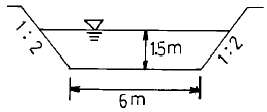
- 2.58m/s
- 1.90m/s
- 1.86m/s
- 1.58m/s
(정답률: 50%)
35. 철도의 곡선부에서는 궤도간격을 넓히는데, 넓히는 양을 무엇이라고 하는가?
- 캔트(Cant)
- 확폭(Slack)
- 전도
- 횡거
(정답률: 93%)
36. 캔트(cant)의 계산에 있어서 속도 및 반경을 2배로 하면 캔트는 몇 배로 하여야 하는가?
- 1/2배
- 1배
- 2배
- 4배
(정답률: 59%)
37. 하천측량시 평면측량에서 유제부(뚝이 있는 제방)의 측량해야 할 범위는?
- 홍수가 영향을 주는 구역보다 약간 넓게 측량한다.
- 제외지의 전부와 제내지의 300m이내까지 측량한다.
- 홍수시에 물이 흐르는 맨 옆에서 약 100m까지 측량한다.
- 하구에서부터 상류의 홍수피해가 미치는 지점까지 측량한다.
(정답률: 100%)
38. 도상면적 200m2로 측정된 도면이 측량 당시 보다 가로, 세로 각각 0.5%씩 늘어난 것이였다면 면적오차는?
- 2.015m2
- 1.875m2
- 1.325m2
- 0.995m2
(정답률: 72%)
39. 완화곡선에 대한 설명 중 잘못된 것은?
- 완화곡선의 접선은 종점에서 원호에 접한다.
- 원곡선과 곡선부 사이에 넣는 특수곡선이다.
- 반지름은 0에서 조금씩 증가하여 일정한 값이 된다.
- 종류는 클로소이드, 3차 포물선, 렘니스케이트곡선등이 있다.
(정답률: 94%)
40. 노선측량의 순서를 가장 옳게 나열한 것은? (단, A : 실측, B : 공사측량, C : 도상계획 및 답사, D : 예측)
- C → B → D → A
- B → C → D → A
- D → A → B → C
- C → D → A → B
(정답률: 100%)
3과목: 사진측량 및 원격탐사
41. 초점거리 15cm, 사진크기 23cm× 23cm인 사진기로 등고도 평탄지를 3,000m 상공에서 종중복도 60%로 촬영하였다. 이 때의 촬영기선길이는 얼마인가?
- 1.44km
- 1.64km
- 1.84km
- 2.76km
(정답률: 86%)
42. 원격탐사(Romote Sensing)의 일반적인 특징이 아닌 것은?
- 넓은 지역을 단시간에 관측
- 원하는 위치와 시기를 지정하기 용이
- 반복 관측이 가능
- 눈에 보이지 않는 정보수집
(정답률: 80%)
43. 화면의 크기 24cm × 18cm, 초점거리 50cm인 사진기로 촬영고도 6,480m에서 항공사진을 찍었다. 이 화면의 포괄 면적은 얼마인가?
- 7.26km2
- 8.26km2
- 9.26km2
- 10.26km2
(정답률: 65%)
44. 평탄한 지형이 촬영된 연직사진에서 촬영에 사용한 카메라의 초점거리가 150mm, 화면크기 23cm× 23cm, 종중복도 60%인 경우의 기선고도비는 얼마인가? (단, 이 경우 사진의 축척은 1/10,000이다.)
- 0.61
- 0.83
- 0.92
- 1.04
(정답률: 8%)
45. 한쌍의 입체사진에 있어서 사진의 좌우를 바꾸어 놓거나, 색안경의 적색과 청색을 좌우로 바꾸어서 볼 때 생기는 입체시는?
- 여색입체시
- 역입체시
- 육안입체시
- 편광입체시
(정답률: 100%)
46. 축척이 1/5,000인 항공사진을 시속 180km/h로 촬영할 경우에 허용흔들림을 사진상에서 0.1m로 한다면 최장노출시간은 몇 초인가?
- 1/200초
- 1/150초
- 1/100초
- 1/50초
(정답률: 62%)
47. 한코스의 촬영에 대하여 한개의 촬영점으로부터 다음 촬영점까지의 종방향거리를 무엇이라 하는가?
- 촬영기선길이
- 종중복도
- 촬영코스길이
- 최소 소요 노출시간
(정답률: 100%)
48. 표정점 측량에서 선점상에 특히 유의해야 할 다음사항 중 적당하지 않은 것은?
- 사진상에 명확하게 볼 수 있는 점이라야 한다.
- 상공에서 잘 볼수 있고 평탄한 곳의 점이 좋다.
- 상공에서 잘 볼수만 있다면 측선을 연장한 가상점(假想点)도 좋다.
- 수애선과 같이 시간적으로 변화하지 않는 점이어야한다.
(정답률: 94%)
49. 화면 크기가 23cm × 23cm이고 초점거리 15cm인 카메라의 화면각은 대략 얼마인가?
- 103°
- 95°
- 87°
- 72°
(정답률: 8%)
50. 다음 중 레이다 위성영상의 활용분야가 아닌 것은?
- 홍수피해 조사
- 해수면 파랑조사
- 수치표고모델 작성
- 토지피복분류
(정답률: 87%)
51. 인접한 2개 사진 및 입체모형에 공통적인 요소를 이용하여 입체모형의 경사와 축척을 통일시켜 1개의 통일된 스트립의 좌표계로 변환하는 작업은?
- 내부표정
- 상호표정
- 접합표정
- 절대표정
(정답률: 91%)
52. 지상사진 측량의 특성에 맞지 않는 것은?
- 촬영위치를 알고 행하는 전방교회법이라 할 수 있다.
- 항공사진에 비해 높이의 정확도가 현저히 낮다.
- 항공사진에 비해 기상의 영향이 크게 좌우하지 않는다.
- 지상사진기는 렌즈의 수차가 작아야 하며 보통각사진기가 많이 쓰인다.
(정답률: 70%)
53. 사진측량에서 말하는 모델이란?
- 한장의 사진이다.
- 편위 수정한 사진이다.
- 한쌍의 사진으로 실체시되는 부분이다.
- 어느 지역을 대표할 만한 사진이다.
(정답률: 100%)
54. 상(Image)좌표는 정밀좌표 관측기로 얻고, 컴퓨터에 의하여 내부표정, 상호표정, 절대표정을 하고, 절대(또는 측지)좌표값을 얻는 항공삼각측량을 무엇이라 하는가?
- 에어로 폴리건법
- 독립모델법
- 해석법
- 스롯트 템프리트법
(정답률: 79%)
55. 편위수정에 있어서 만족해야할 3가지 조건을 기술한 내용 중 옳지 않은 것은?
- 기하학적 조건
- 광학적 조건
- 샤임프러그 조건
- 템프릿트 조건
(정답률: 86%)
56. 촬영용 항공기로 요구되는 조건 중 틀리는 것은?
- 안정성(安定性)이 좋을 것
- 조종성(操縱性)이 좋을 것
- 상승(上昇)속도가 작을 것
- 이,착륙(離,着陸)거리가 짧을 것
(정답률: 85%)
57. 동서 20km, 남북 40km의 직사각형 구역에서 항공사진 한장의 입체모델에 찍힌 면적이 13.47km2이라하면 이 지역에 필요한 사진매수는? (단, 안전율은 30%이다.)
- 45매
- 56매
- 67매
- 78매
(정답률: 93%)
58. 공간해상도가 높은 전정색영상과 공간해상도가 낮은 칼라(다중분광)영상을 합성하여 공간해상도가 높은 칼라영상을 만드는데 사용하는 영상처리방법은?
- Fourier 변환
- 영상융합(Image Fusion) 또는 해상도 융합(Resolution M erge)변환
- NDVI(Normaliz ed Difference Vegetation Index ) 변환
- 공간 필터링(Spatial Filtering)
(정답률: 100%)
59. 다음은 상호표정을 하기 위한 인자들의 집합이다. 상호표정을 할 수 없는 것은?
- k1, k2, by1, ψ1, ω1, ω2
- k1, k2, ω1, bz2, ψ1
- k1, by, ψ1, bz1, ω1
- k1, k2, ω1, bz1, ψ2
(정답률: 75%)
60. 축척에 따른 초점거리와 촬영고도가 올바른 것은?
- 축척(1:5,000)-초점거리(15cm)-촬영고도(1,⑤0m)
- 축척(1:10,000)-초점거리(15cm)-촬영고도(2,100m)
- 축척(1:15,000)-초점거리(21cm)-촬영고도(3,150m)
- 축척(1:20,000)-초점거리(21cm)-촬영고도(3,500m)
(정답률: 100%)
4과목: 지리정보시스템
61. 표고가 118m와 145m인 두 점 사이의 수평거리가 250m이며 등경사지일 때 130m의 등고선이 통과하는 지점은 118m표고점에서 수평거리로 얼마인가?
- 9.9m
- 102m
- 1⑤m
- 111m
(정답률: 91%)
62. 다음 중 인터넷 지형공간정보체계의 특징이 아닌 것은?
- 클라이언트/서버 체계의 통합 체계이다.
- 대화형체계이다.
- 하이퍼텍스트(hypertext) 정보체계이다.
- 집중형 체계이면서 실시간으로 정보 체계에 접속이 가능하다.
(정답률: 93%)
63. 원의 직경을 측정하여 50m± 0.2m를 얻었다. 이것으로 부터 계산한 원의 면적에 생긴 오차는 얼마 정도인가?
- ± 14.6m2
- ± 15.0m2
- ± 15.7m2
- ± 16.2m2
(정답률: 73%)
64. 시거측량을 한 결과 다음과 같은 결과를 얻었다. 수평거리 D와 고저차 H는 얼마인가? (단, 협장(狹長) ℓ =1.8m, 연직각 α =15° , K = 100, C = 0.2 )
- H = 45m, D = 168m
- H = 56m, D = 172m
- H = 64m, D = 186m
- H = 75m, D = 198m
(정답률: 54%)
65. 거리측량에 있어서 우연오차에 관한 설명 중 해당하지 않는것은?
- 우연오차는 부호와 크기가 불규칙하게 나타난다.
- 정오차와 과오를 소거시키고 남는 오차이다.
- 같은 크기의 정(+)오차와 부(-)오차의 발생확률은 같다.
- 오차의 크기나 방향이 일정한 오차이다.
(정답률: 55%)
66. 다음 삼각측량의 작업순서를 옳은 순서대로 배열된 것은 어느 것인가? (A: 선점, B: 각측량, C: 편심조정, D: 기선측량, E: 계산, F: 조표)
- A-B-C-D-E-F
- A-C-F-B-E-D
- A-F-E-D-C-B
- A-F-D-B-C-E
(정답률: 92%)
67. 다음 중 점 형태의 자료에 대한 공간분석에 사용되는 방법은?
- 형상관측
- 프랙틀 차원해석
- 최근린 방법
- 공간적 자동상관관계
(정답률: 86%)
68. LANDSAT 위성에 관하여 틀린 설명은?
- LANDSAT (1,2,3호)은 RBV와 MSS 두 개의 탐측기를 탑재하고 있다.
- LANDSAT 위성은 HRV 탐측기를 탑재하고 있다.
- LANDSAT (1,2,3호) 위성들은 103분에 한번씩 하루에 14번 지구를 회전한다.
- LANDSAT(4,5호)은 MSS와 TM 두 개의 탐측기를 탑재하고 있다.
(정답률: 100%)
69. 양차가 0.01m이 되기 위한 수평거리는 얼마인가? (단, k = 0.14, 지구곡률반지름(R) = 6,370km)
- 400m
- 395m
- 390m
- 385m
(정답률: 100%)
70. 다음중 수준측량의 용어 중 맞는 것은?
- 전시는 전후의 측량을 연결할 때 사용한다.
- 후시는 기지의 측점에 세운 표척의 읽음값이다.
- 기계고는 지면에서부터 망원경 중심까지의 높이이다.
- 수준면은 각 측점에서 지구 중심에 직각으로 이루어진 곡면이다.
(정답률: 72%)
71. 두 개 이상의 주제도로부터 새로운 정보를 추출하기 위해 사용되는 분석 기법은?
- 중첩분석
- 표면분석
- 인접성 분석
- 조직망(network) 분석
(정답률: 84%)
72. 삼각점 A부터 B점에 대한 방향각은 109° 18′ 30″ , A점에 대한 진북방향각은 -0° 36′ 18″, 자침편각은 서편 6°10′ 30″라 할때 AB의 자침방위각은 얼마인가?
- 116° ⑤′ 18″
- 114° 52′ 48″
- 108° 42′ 18″
- 109° 54′ 48″
(정답률: 77%)
73. 길이 1,800m를 50m 줄자로 측정할 때 줄자에 의한 측거오차를 50m에 대하여 ± 6mm라 할때 전길이 측정에 생기는 오차는?
- ± 0.16mm
- ± 16mm
- ± 0.36mm
- ± 36mm
(정답률: 93%)
74. 그림에서 B→ P의 방위각은? (단, A→ B의 방위각은 115° 25′ 20″, α =66° 17′ 12″,γ =56° 18′ 16″)
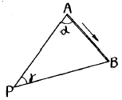
- 58° 00′ 48″
- 121° 59′ 12″
- 148° 09′ 12″
- 238° 00′ 48″
(정답률: 50%)
75. 다음 중 자료기반의 장점이 아닌 것은?
- 통제의 집중화를 이룰 수 있다.
- 자료기반에 관한 소프트웨어와 이와 관련된 처리장비가 저렴하다.
- 자료기반의 새로운 응용분야에 적용시키는 것이 용이하게 된다.
- 자료의 중복을 방지할 수 있다.
(정답률: 25%)
76. 시거측량에 있어서 지형의 경사가 급할수록 고저차 측정값에 가장 큰 영향을 미치는 것은?
- 협장 측정 오차
- 연직각 측정 오차
- 협장과 연직각 측정오차가 거의 같은 영향을 미친다.
- 시거정수 중 가정수 오차
(정답률: 86%)
77. 5mm+5ppm의 정확도를 갖는 광파 측거기를 사용한다고 할때, 2,000m의 거리에서 예측되는 표준오차는 얼마인가? (단, 구심오차는 무시함)
- 7.07mm
- 10.00mm
- 11.18mm
- 3.87mm
(정답률: 92%)
78. 삼각망 중에서 가장 정도가 높은 망은?
- 유심 삼각망
- 사변형 삼각망
- 단열 삼각망
- 모두 정도가 같다.
(정답률: 92%)
79. A,B,C 세점에서 삼각수준측량에 의해 P점 높이를 구한 결과 각각 365.13m, 365.19m, 365.02m이었다. 그 거리가
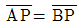
=2km,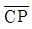
=3km 일 때 P점의 표고는?- 365.125m
- 365.425m
- 365.824m
- 366.180m
(정답률: 100%)
80. 지형도 1/25,000에서 963m의 산정으로부터 423m의 산밑까지의 측정치가 95mm였다. 이때 사면의 경사는 얼마인가?
- 약 1/7.4이다.
- 약 1/6.4이다.
- 약 1/5.4이다.
- 약 1/4.4이다.
(정답률: 58%)
5과목: 측량학
81. 다음 중 측량법에서 정의한 측량계획기관이란?
- 측량업을 영위하는 기관
- 기본 측량 및 공공 측량에 관한 계획을 수립하는 자
- 측량에 관한 계획, 설계에 따라 측량을 실시하는 자
- 측량에 관한 계획, 설계, 실시, 지도, 감리 및 조사 연구를 하는 자
(정답률: 85%)
82. 다음 중 일시표지에 해당되는 것은?
- 수준점 표석(B.M)
- 측표(測標)
- 표기(標旗)
- 임시 측량표지 막대
(정답률: 93%)
83. 정부발행 지형도의 축척별 등고선(주곡선)간격 중 옳지 않은 것은? (단, 축척 - 등고선 간격)
- 1:250,000 - 100m
- 1:25,000 - 10m
- 1:50,000 - 20m
- 1:5,000 - 2m
(정답률: 100%)
84. 건설교통부장관은 규정에 의하여 과태료를 부과하고자 하는 경우에는 몇 일 이상의 기간을 정하여 과태료처분대상자에게 구술 또는 서면에 의한 의견진술의 기회를 주어야 하는가?
- 7일
- 10일
- 14일
- 30일
(정답률: 8%)
85. 측량법상 측량기술자의 자격기준 중 학력·경력자인 경우 고등학교를 졸업한자로서 3년이상 측량업무를 수행한 자는 어느 기술 등급에 속하는가?
- 중급기능사
- 초급기능사
- 초급기술자
- 중급기술자
(정답률: 74%)
86. 기본측량의 경우 측량성과를 고시하여야 하는데 다음 사항중 고시에 포함되지 않는 것은?
- 측량의 종류 및 정확도
- 측량실시의 시기 및 지역
- 측량성과의 보관장소
- 측량성과의 보존년한
(정답률: 100%)
87. 부정한 방법으로 측량업의 등록을 한 자의 벌칙은?
- 200만원 이하의 과태료를 부과한다.
- 1년 이하의 징역 또는 300만원 이하의 벌금에 처한다.
- 2년 이하의 징역 또는 500만원 이하의 벌금에 처한다.
- 3년 이하의 징역 또는 1000만원 이하의 벌금에 처한다.
(정답률: 38%)
88. 규정에 의하여 측량업자의 지위를 승계한 자는 그 승계사유가 발생한 날부터 몇 일 이내에 건설교통부장관에게 신고하여야 하는가?
- 7일
- 14일
- 30일
- 60일
(정답률: 94%)
89. 측량업의 등록기준에서 아래의 표와 같은 장비기준을 요구하는 측량업은?
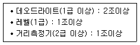
- 측지측량업
- 일반측량업
- 공공측량업
- 수치지도제작업
(정답률: 69%)
90. 측량협회에 대한 설명으로 틀린 것은?
- 협회는 법인으로 한다.
- 협회는 그 주된 사무소의 소재지에서 설립등기를 함으로써 성립한다.
- 측량업자와 측량기술자는 협회의 정관이 정하는 바에 의하여 협회의 회원이 될 수 있다.
- 협회의 감독 기타 협회에 관하여 필요한 사항은 건설교통부령으로 정한다.
(정답률: 92%)
91. 공공 측량에 따른 손실보상 기관은?
- 국립지리원장
- 건설교통부장관
- 공공측량 계획기관
- 행정자치부장관
(정답률: 79%)
92. 국립지리원장은 지각,지모의 변동으로 기본 측량의 성과가 현장과 다르게 되었을 경우 도시, 농촌, 기타지역으로 구분할때 몇년마다 지도를 수정하여야 하는가?
- 2년, 4년, 6년
- 2년, 5년, 7년
- 3년, 6년, 9년
- 1년, 4년, 6년
(정답률: 94%)
93. 지도도식 규정에서 4호선의 굵기는?
- 0.1㎜
- 0.2㎜
- 0.3㎜
- 0.4㎜
(정답률: 93%)
94. 건설교통부 장관은 일반측량의 성과가 어떤 목적을 위하여 필요하다고 인정되는 경우에는 일반측량의 실시자에게 측량성과 및 측량기록 사본의 제출을 요구할 수 있는데 이 때 그 목적과 관계없는 것은?
- 측량에 관한 자료의 수집 및 분석
- 측량의 정확성 확보
- 측량기기의 개발
- 측량의 중복배제
(정답률: 82%)
95. 다음 측량의 설명 중 틀린 것은?
- 일반측량이란 기본측량 및 공공측량 외의 측량으로 건설교통부령으로 정하는 바에 의하여 국립지리원장이 지정하는 측량은 제외한다
- 측량작업기관이란 측량계획기관의 지시 또는 위임에 의하여 측량에 관한 작업을 실시하는 자를 말한다.
- 측량기록이란 측량성과를 얻을 때까지의 측량에 관한 작업의 기록을 말한다.
- 기본측량에 종사하는 공무원은 측량을 실시하기 위하여 필요한 때에는 타인의 토지나 건물에 출입할 수 있다.
(정답률: 82%)
96. 기본측량을 위하여 설치한 영구 표지를 폐기하였을 경우 통지를 받아야 하는자가 아닌 것은?
- 도지사
- 소유자
- 점유자
- 국립지리원장
(정답률: 86%)
97. 기본측량을 위해 설치한 측량표는 누가 감시하여야 하는가?
- 건설교통부장관
- 국립지리원장
- 관할구역의 시장, 군수 또는 구청장
- 관할구역의 경찰서장
(정답률: 80%)
98. 기본측량의 실시 공고자는?
- 건설교통부장관
- 국립지리원장
- 서울특별시장,광역시장 또는 도지사
- 시장,군수
(정답률: 94%)
99. 기본측량성과중 지도 및 연안해역기본도를 허가없이 국외로 반출할 수 있는 경우에 대한 설명으로 틀린 것은?
- 대한민국정부와 외국정부간에 체결된 협정 또는 합의 에 의하여 상호 교환하는 경우
- 정부를 대표하여 외국정부와 교섭하거나 국제회의 또는 국제기구에 참석하는 자가 자료로 사용하기 위하여 반출하는 경우
- 관광객의 유치와 관광시설의 선전을 목적으로 제작하여 반출하는 경우
- 축척 5만분의 1이상의 축척도를 국외로 반출하는 경우
(정답률: 100%)
100. 측량업등록의 결격사유로 잘못된 것은?
- 금치산자 또는 한정치산자
- 금고이상의 선고를 받고 그 집행이 종료된 날부터 3년이 경과되지 아니한 자
- 파산선고를 받고 복권되지 아니한 자
- 임원중에 한정치산자가 있는 법인
(정답률: 95%)